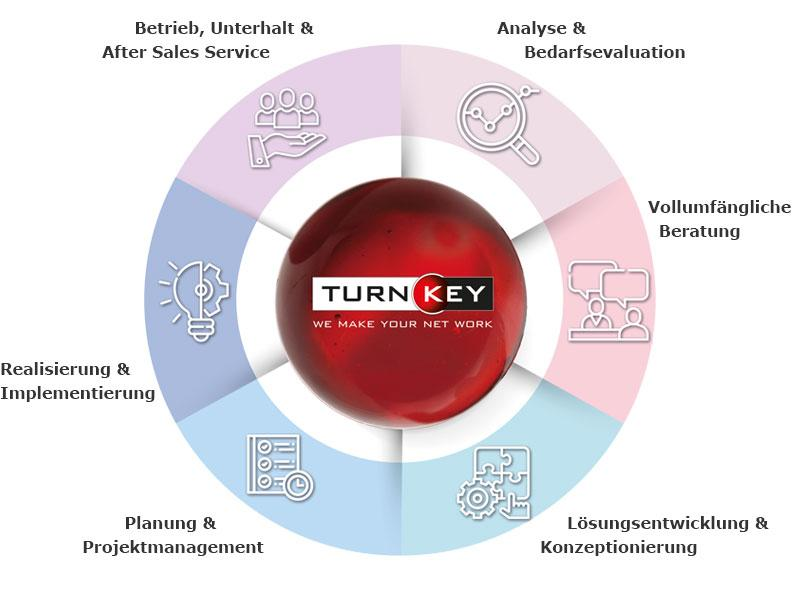

Über mich
Ich habe die ersten zwei Jahre der Lehre als Informatiker EFZ Plattformentwicklung absolviert. Ich arbeite lösungsorientiert, strukturiert und habe Freude daran, technische Herausforderungen effizient zu analysieren und zu beheben. Besonders wichtig ist mir eine saubere Dokumentation und ein professioneller Umgang mit Benutzerinnen und Benutzern.
Lehrbetrieb – TurnKey Services AG

Meine Ausbildung absolvierte ich bei der TurnKey Services AG, einem professionellen IT‑Dienstleister mit Fokus auf Infrastruktur, Cloud‑Lösungen und Systemmanagement. Dort konnte ich wertvolle praktische Erfahrungen sammeln und aktiv an realen Kundenprojekten mitarbeiten.
- Client‑ und Netzwerk‑Rollouts
- Cloud‑Synchronisation & Benutzerverwaltung
- Server‑Migrationen & Backup‑Konzepte
- Support im 1st‑ und 2nd‑Level
- Dokumentation und Systempflege
Berufserfahrung
- Zwei Jahre die Lehre als Informatiker EFZ, Fachrichtung Plattformentwicklung, absolviert.
- Mitarbeit bei Client‑Rollouts, Netzwerk‑Rollouts und Cloud‑Synchronisation.
- Erfassung und Administration von Devices, Benutzerkonten und Cloud‑Services.
- Unterstützung im 1st‑ und 2nd‑Level‑Support.
Fähigkeiten
Client‑Troubleshooting
Azure Deployment
Active Directory
Serverwartung
Backup‑Strategien
Hardware‑Analyse
PowerShell Basics
Cloud‑Integration
IT‑Projekte
- Client‑Rollout: Imaging, Konfiguration, Benutzerübergabe.
- Netzwerk‑Rollout: Patch‑Management, Switch‑Konfiguration, Testläufe.
- Cloud‑Synchronisation: OneDrive/SharePoint‑Setup, Benutzerverwaltung.
- Server‑Migration: Datenübertragung, Backup‑Konzepte, Testumgebungen.
Kontakt
- Email: piratheeshan@outlook.com
- Telefon: +41 79 902 08 90
- Wohnort: Höri, Zürich